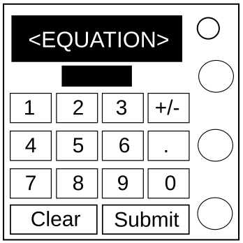

On the Subject of Dealing With The Consequences Of Not Making An Equation Generator
See the original manual for original instructions.
See the original raw version for original equations.
Stage 1 (a = ...) |
Stage 2 (b = ...) |
Stage 3 (c = ...) |
|---|---|---|
| 3z | (2x / 10) - y | ((y / 2) + 7 - z) / 4 |
| 5 + y | (7x)y | (z / 4) - 3x + ((2 + y) / 10) |
| 6 - x | (x + y) - (z / 2) | 8x - z + y |
| 7x | (y / 2) - z | ((9y) / 2) + ((xy) / 4) |
| 8y | (z - y) / 2 | ((x(y / 2) + 11) * 2y) - 4 |
| 9 + z | (zy) - (2x) | x - 2y + z |
| x + 1 | 2(z + 7) | (xy - z) * 10 |
| x / 2 | 2z + 7 | ((z / 2) - (x / 4) + z) / 4 |
| y - 2 | xy - (2 + x) | |
| y / 4 | xyz | |
| z - 7 | ||
| z / 10 |